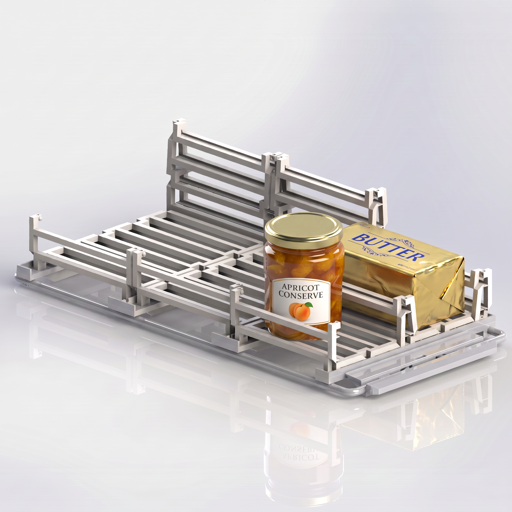
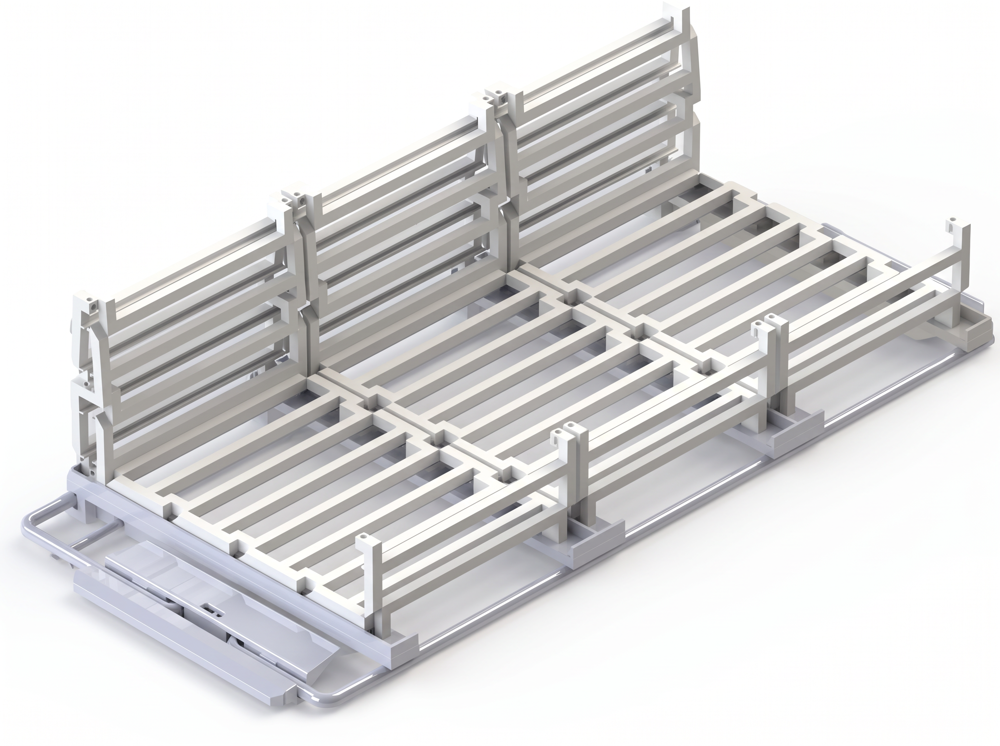

Year 2 · Product design
Thetford
Fridge Interior.
A modular interior system designed to keep food and drinks secure, quiet and within reach during a camper or caravan journey.
Calm storage
on the move.
Thetford asked for a fridge-interior solution for campers and caravans. When a vehicle moves, loose food can slide, rattle, tip or fall when the door is opened - turning arrival into an unnecessary clean-up task.
I developed the concept around a simple ambition: hold everyday products in place without making the refrigerator harder to use, clean or adapt.
One system,
many formats.
Research into typical fridge contents identified jars, butter packs, bottles and cans as the products most likely to move during travel. The resulting system uses a lightweight grid and adjustable rails to define secure zones for varying shapes and sizes.
The modular layout keeps products visible and reachable, while preserving key constraints from the brief: sufficient airflow, food-safe materials, simple cleaning and compatibility with the existing fridge structure.

